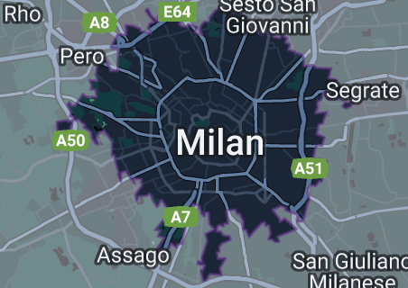

Μιλάνο
Το Μιλάνο είναι μια πόλη στη βόρεια Ιταλία, πρωτεύουσα της Λομβαρδίας και η δεύτερη πιο πυκνοκατοικημένη πόλη στην Ιταλία μετά τη Ρώμη. Η ίδια η πόλη έχει πληθυσμό περίπου 1,4 εκατομμύρια κατοίκους, ενώ η μητροπολιτική της πόλη έχει 3,26 εκατομμύρια κατοίκους. Η συνεχώς δομημένη αστική περιοχή της (τα εξωτερικά προάστια της οποίας εκτείνονται πολύ πέρα από τα όρια της διοικητικής μητροπολιτικής πόλης και εκτείνεται ακόμη και στην κοντινή χώρα της Ελβετίας) είναι η τέταρτη μεγαλύτερη στην ΕΕ με 5,27 εκατομμύρια κατοίκους. Σύμφωνα με εθνικές πηγές, ο πληθυσμός στην ευρύτερη μητροπολιτική περιοχή του Μιλάνου (γνωστή και ως Μεγάλο Μιλάνο), υπολογίζεται μεταξύ 8,2 και 12,5 εκατομμυρίων, καθιστώντας την μακράν τη μεγαλύτερη μητροπολιτική περιοχή στην Ιταλία και μια από τις μεγαλύτερες στην ΕΕ.
|  |
Παρασκευή — 23 |
Σάββατο — 24 |
Παρασκευή — 23
Καθεδρικός ναός του Μιλάνου

Ο καθεδρικός ναός του Μιλάνου είναι το πιο εμβληματικό αξιοθέατο του Μιλάνου και αποτελεί ένα απαραίτητο αξιοθέατο για όποιον επισκέπτεται την πόλη. Είναι ο πέμπτος μεγαλύτερος καθεδρικός ναός στον κόσμο και διαθέτει ένα εκπληκτικό γοτθικό σχέδιο.
Galleria Vittorio Emanuele II

Η Galleria Vittorio Emanuele II είναι ένας δημοφιλής προορισμός για ψώνια στο Μιλάνο, γνωστός για τα καταστήματα υψηλών προδιαγραφών και την όμορφη αρχιτεκτονική του. Φιλοξενεί επίσης μερικά από τα καλύτερα εστιατόρια και καφετέριες της πόλης, καθιστώντας το ένα εξαιρετικό μέρος για να σταματήσετε για μια μπουκιά φαγητό.
Περιοχή Τέχνης Brera

Η περιοχή τέχνης Brera είναι μια ζωντανή και πολιτιστικά πλούσια περιοχή του Μιλάνου που φιλοξενεί πολλές από τις καλύτερες γκαλερί και μουσεία τέχνης της πόλης. Εδώ μπορείτε να δείτε έργα μερικών από τους πιο διάσημους καλλιτέχνες της Ιταλίας, όπως ο Λεονάρντο ντα Βίντσι και ο Μιχαήλ Άγγελος.
Περιοχή Navigli

Η περιοχή Navigli είναι μια γραφική γειτονιά του Μιλάνου που είναι γνωστή για τα κανάλια και τα ιστορικά κτίρια της. Αποτελεί δημοφιλή προορισμό για ντόπιους και τουρίστες, προσφέροντας μια μεγάλη ποικιλία από μπαρ, εστιατόρια και καταστήματα.
Σάββατο — 24
Κάστρο Sforza

Το Κάστρο Sforza είναι ένα όμορφο μεσαιωνικό φρούριο που κάποτε ήταν η έδρα της εξουσίας στο Μιλάνο. Σήμερα φιλοξενεί διάφορα μουσεία, όπως το Museo Civico d'Arte Antica και το Museo del Novecento, τα οποία διαθέτουν ένα ευρύ φάσμα εκθεμάτων τέχνης και πολιτισμού.
Πινακοθήκη Μπρέρα

Η Pinacoteca di Brera είναι μια διάσημη γκαλερί τέχνης στο Μιλάνο της Ιταλίας, η οποία στεγάζει μια εντυπωσιακή συλλογή πινάκων και άλλων έργων τέχνης. Είναι ένα από τα σημαντικότερα μουσεία τέχνης της χώρας και είναι ιδιαίτερα γνωστό για τη συλλογή του από την ιταλική αναγεννησιακή τέχνη. Πολλοί άνθρωποι ενδιαφέρονται να επισκεφθούν την Pinacoteca di Brera επειδή προσφέρει την ευκαιρία να δουν από κοντά και αυτοπροσώπως μερικά από τα σπουδαιότερα έργα τέχνης στον κόσμο. Επιπλέον, το ίδιο το μουσείο είναι ένα όμορφο και ιστορικό κτίριο που αξίζει να δείτε, ακόμη και αν δεν σας ενδιαφέρει ιδιαίτερα η τέχνη.
Εθνικό Μουσείο Επιστήμης και Τεχνολογίας

Το Εθνικό Μουσείο Επιστήμης και Τεχνολογίας Λεονάρντο ντα Βίντσι είναι ένα συναρπαστικό μουσείο που παρουσιάζει τις εφευρέσεις και τις καινοτομίες ενός από τους πιο διάσημους εφευρέτες του κόσμου. Είναι ένα εξαιρετικό μέρος για να μάθετε για τη ζωή και το έργο του Λεονάρντο, καθώς και για την ιστορία της επιστήμης και της τεχνολογίας στο Μιλάνο.
Parco Sempione

Το Parco Sempione είναι ένα όμορφο πάρκο που βρίσκεται στην καρδιά του Μιλάνου. Είναι ένα εξαιρετικό μέρος για να χαλαρώσετε και να απολαύσετε την ύπαιθρο, και προσφέρει ένα ευρύ φάσμα δραστηριοτήτων, όπως μονοπάτια για περπάτημα και ποδηλασία, παιδικές χαρές και αθλητικές εγκαταστάσεις.